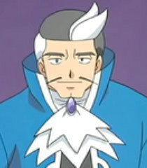

|
Ewan Remington |
|
Ewan Remington is a first-class milita and a member of Magdalan Order. He keeps an eye on Rosette and gang. He likes to flirt and very popular with all the girls at the Magdalan Order. He is a very powerful fighter but mysterious and hides many secrets. He has feels for Mary Magdalene. |
 |
Ghetsis Harmonia |
|
Ghetsis Harmonia is the boss of Team Plasma. He is one of the Seven Sage behind Team Plasma. His goal is to free Pokemon from humans. |
|  |
Juan |
- Pokemon Advanced Generations
|
Juan is the Gym Leader of Sootopolis City's Gym. He also an accomplished Coordinator. He specializes in Water-type Pokemon. |
 |
Tokiomi Tohsaka |
- Fate/Zero
- Fate/Zero Season 2
- Fate/Zero Remix
|
Tokiomi Tohsaka is the father of Rin Tohsaka and Sakura Matou. As a member of the Tohsaka family, he endered the Fourth Holy Grail War as the Master of Archer. Tokiomi is an arrogant and manipulative man. He cares for his wife and his daughter. |